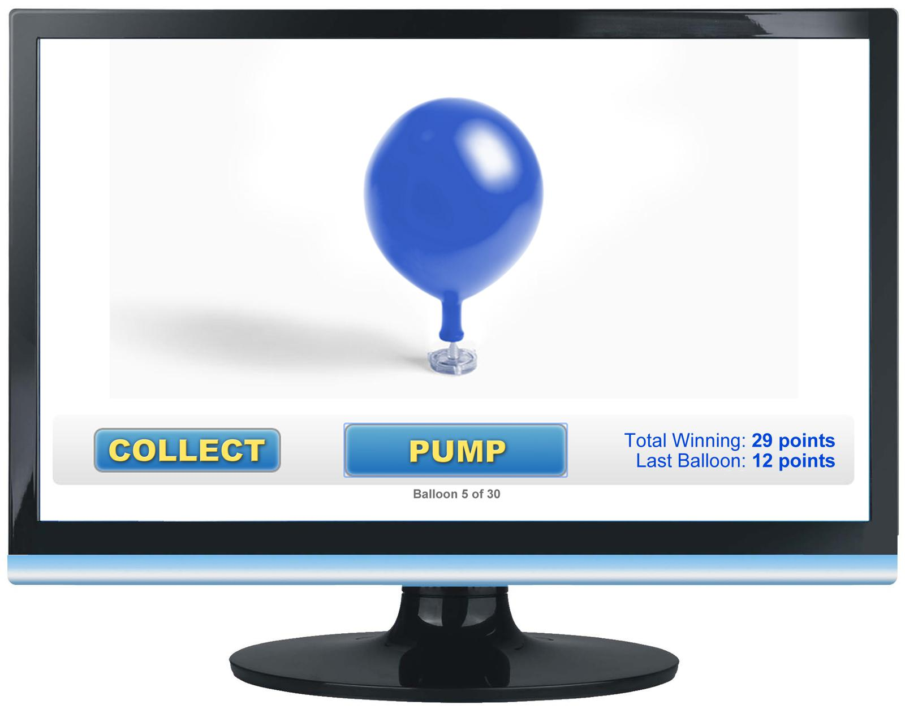
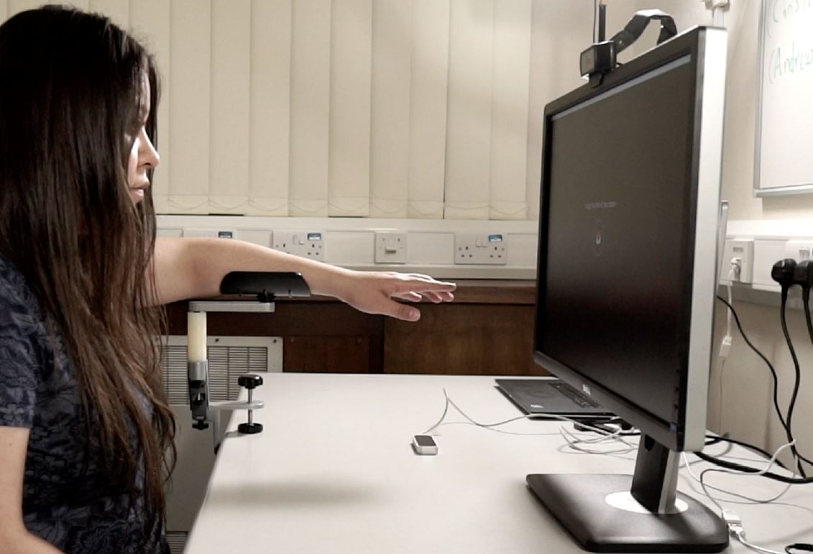
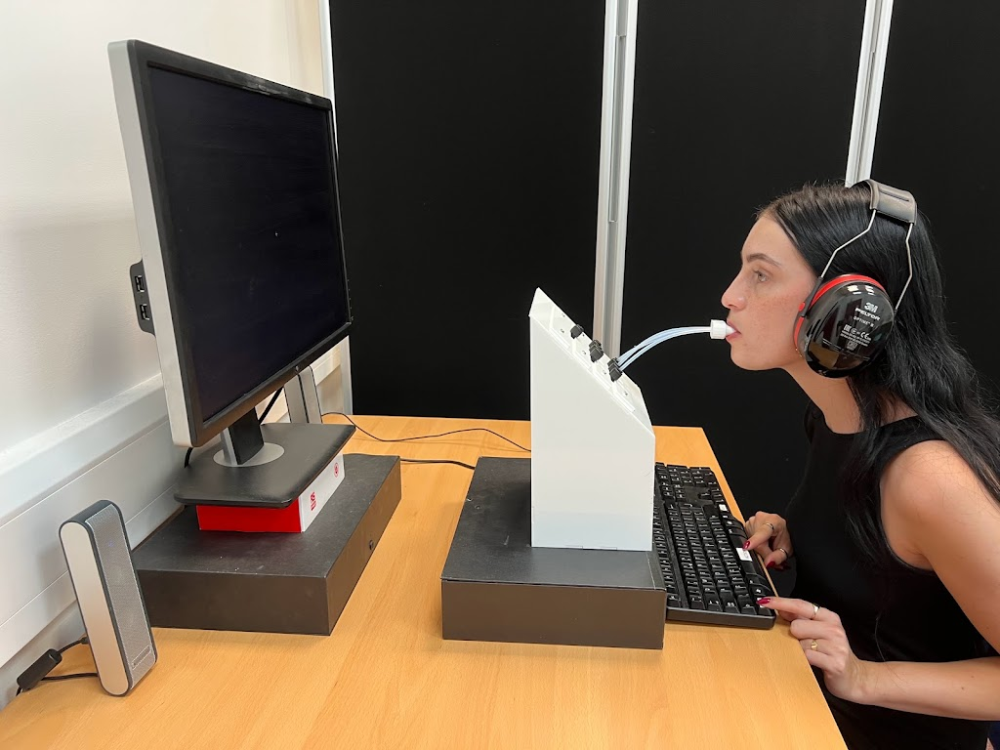

Effect of Taste on Risk-Taking Behaviour
Taking risks is part of everyday life. Some people actively pursue risky activities (e.g., jumping out of a plane), while others avoid any risk (e.g., people with anxiety disorders). Paradoxically, risk-taking is a primitive behaviour that may lead to a happier life by offering a sense of excitement through self-actualization. Here, we demonstrate for the first time that sour - amongst the five basic tastes (sweet, bitter, sour, salty, and umami) - promotes risk-taking.

Sense of Agency in touchless systems
The sense of agency (SA), or sense of control, is the subjective awareness of initiating, executing, and controlling one's own volitional actions in the world. In this work, we investigated the SoA in touchless systems using the intentional binding paradigm. In this work, we investigated the SoA in touchless systems using the intentional binding paradigm.

Sense of Agency in gustatory interfaces
This work investigates the SoA in gustatory systems using the intentional binding paradigm to quantify how different taste outcome modalities influence users' SoA. Our findings show that all three taste outcomes exhibit similar intentional binding compared to auditory in medium sweet likers. We also show that longer action-outcome duration improved the SoA.